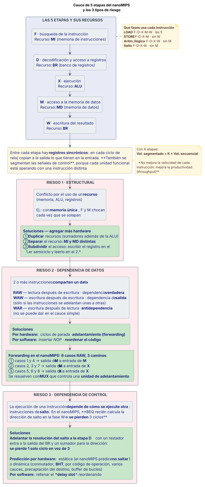
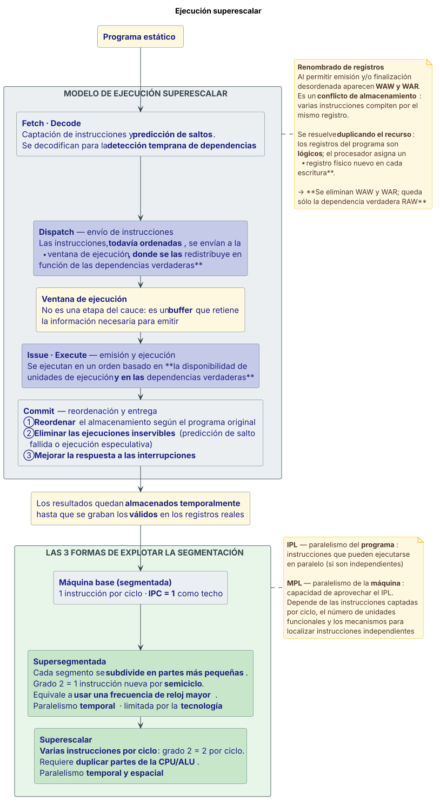
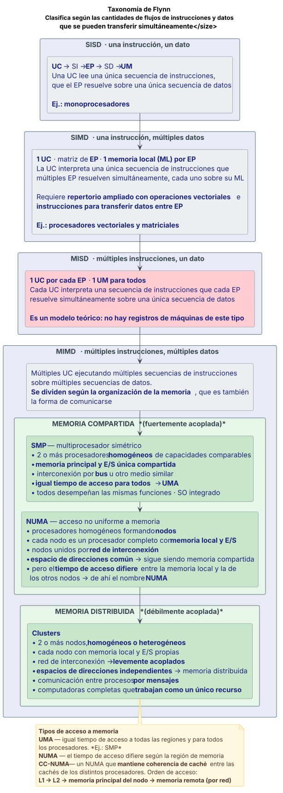

Diagramas¶
Los 13 esquemas del sitio, todos juntos. Cada uno está basado en un diagrama que aparece en las teorías de cátedra: donde la teoría no tiene diagrama, no se inventó uno.
Cómo están hechos
Los diagramas se escriben en PlantUML (docs/diagramas/*.puml, versionados
en el repo) y se pre-renderizan a SVG durante el build. El sitio publicado
no depende de ningún servidor externo: se ven igual offline desde el
celular.
Están armados angostos y altos a propósito. Varios de los originales de la cátedra son horizontales; dibujados así se van a ~1600 px de ancho y, escalados al ancho de un celular, el texto queda ilegible.
Interrupciones¶
Ciclo de instrucción con la fase de gestión de interrupciones¶

Fuente: Teorías/02 Arq clase2 Interrupciones.pdf, fil. 22–23, 26–27.
Estructura y conexionado del PIC¶

Fuente: Teorías/02 Arq clase2 Interrupciones.pdf, fil. 33–36, 43–45 y Prácticas/Practica 3 - Interrupciones por Hardware - Resolución - AC25.pdf, p. 1–2.
Entrada/Salida y DMA¶
Estructura interna del módulo de E/S¶

Fuente: Teorías/03 Arq clase3 EntradaSalida.pdf, fil. 10–13.
Las 3 técnicas de gestión de la transferencia¶

Fuente: Teorías/03 Arq clase3 EntradaSalida.pdf, fil. 24–28 y 44–52.
Memoria caché¶
Jerarquía de memoria¶

Fuente: Teorías/07 Arq clase7 Memoria.pdf, fil. 8–15.
Las 3 correspondencias de caché¶

Fuente: Teorías/07 Arq clase7 Memoria.pdf, fil. 42–55.
Segmentación¶
Cauce de 5 etapas del nanoMIPS con los 3 tipos de riesgo¶

Fuente: Teorías/04 Arq clase4 Segmentación de cauce.pdf, fil. 45–54 y 58–66, con las soluciones de Teorías/05 Arq clase5 Algunas soluciones.pdf, fil. 6, 12–27 y 32–39.
RISC¶
Ventana de registros¶

Fuente: Teorías/06 Arq clase6 RISC.pdf, fil. 26–38.
Superescalares¶
Modelo de ejecución superescalar¶

Fuente: Teorías/08 Arq clase8 Procesadores Superescalares.pdf, fil. 9–12, 18, 39–43 y 44–47.
Procesamiento paralelo¶
Taxonomía de Flynn con SMP, NUMA y clusters¶

Fuente: Teorías/09 Arq clase9 Procesamiento paralelo.pdf, fil. 5–17, 18–19, 22–28 y 32–33.
Buses¶
Interconexión y jerarquía de buses¶

Fuente: Teorías/7 anexo clase 07 sobre_buses.pdf, fil. 8–11, 13–14 y 38.
Von Neumann y pila¶
Los 3 subsistemas de von Neumann¶

Fuente: Teorías/03 Arq clase3 EntradaSalida.pdf, fil. 3.
Las máquinas de N direcciones¶

Fuente: Teorías/1 anexo clase 01 sobre maq_de_Ndir.pdf, fil. 1–5. Los programas van transcriptos textuales de las filminas.
Lo que NO se dibujó, y por qué¶
Diagramas que la cátedra no tiene
Estos temas se preguntan en los finales pero no tienen diagrama de cátedra. No se dibujaron para no inventar un esquema que nunca se dio:
- Estructura de la pila (puntero de pila, base, límite) — sólo descrita en texto, y en resúmenes de alumnos.
- Temporización asíncrona de bus — la filmina 22 del anexo de la clase 07 trae el cronograma MSYN/SSYN sin texto que lo explique.
- SCSI — aparece nombrado en los esquemas de jerarquía de buses, pero no hay ninguna filmina sobre su funcionamiento.
- Intel Core i7 — la filmina 41 es una imagen sin texto ni cálculo de anchos de banda, a diferencia del resto de los chipsets.